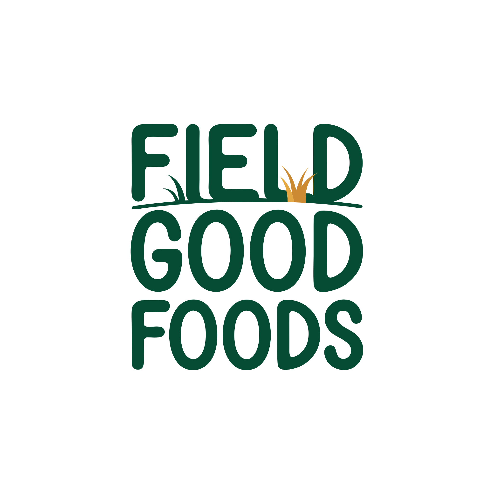
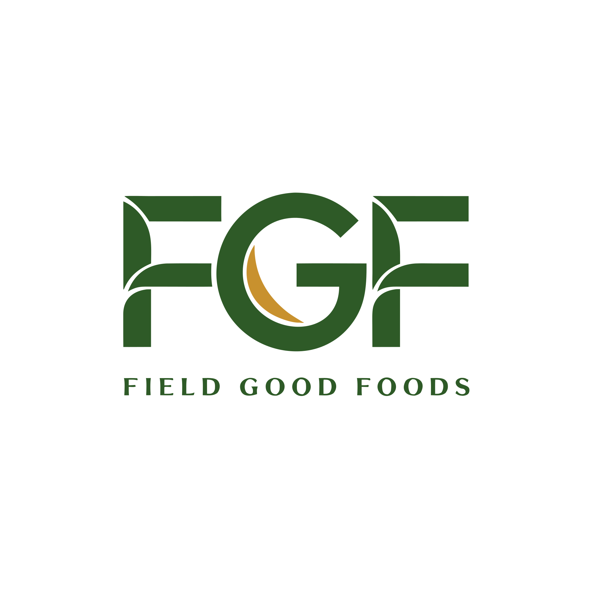
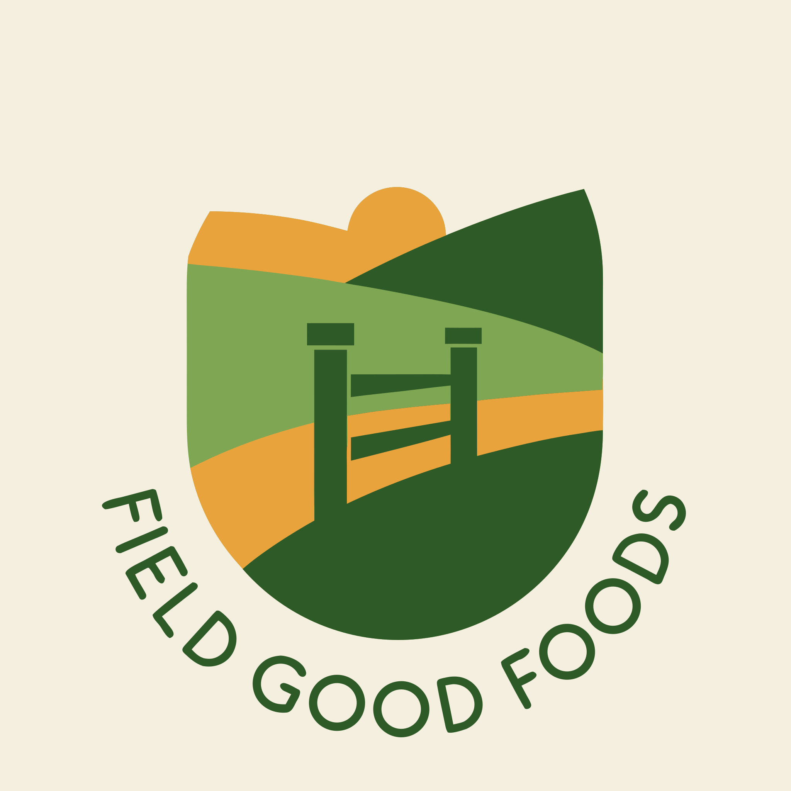
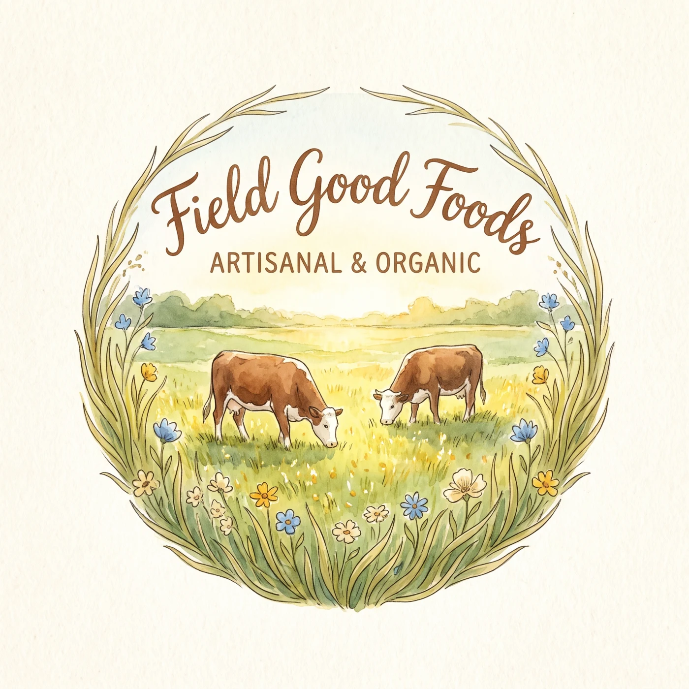
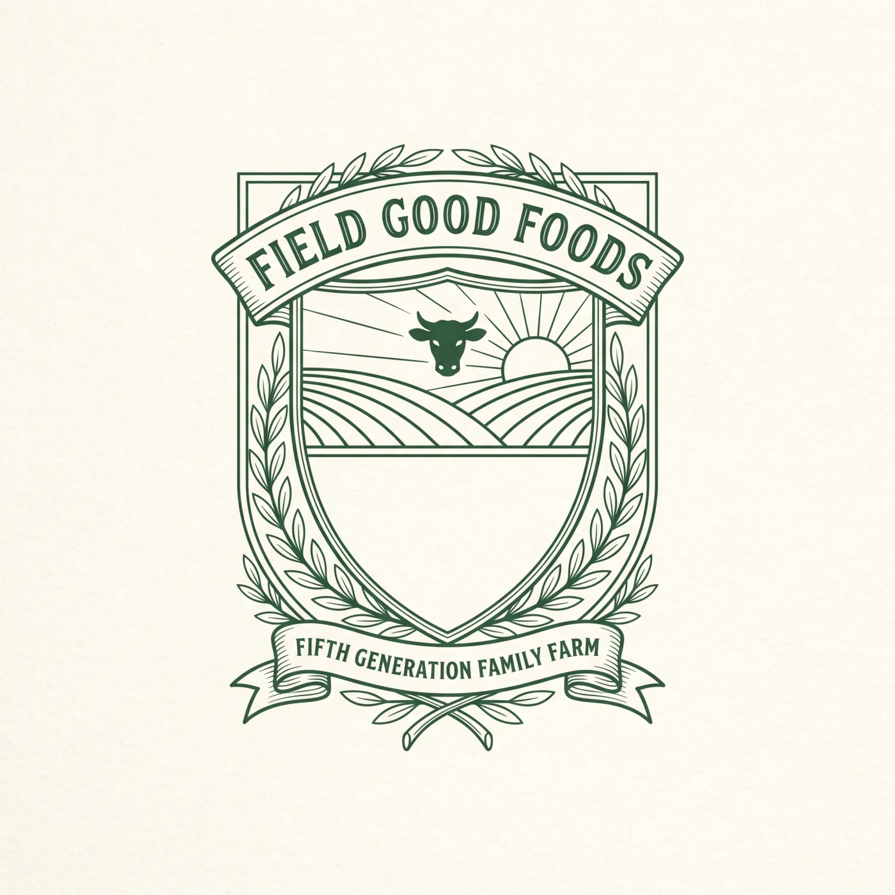
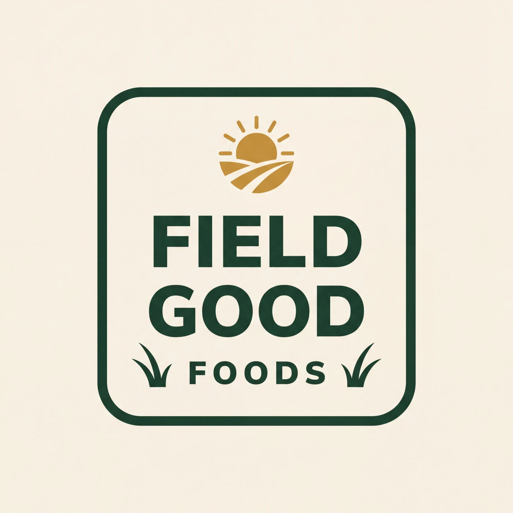
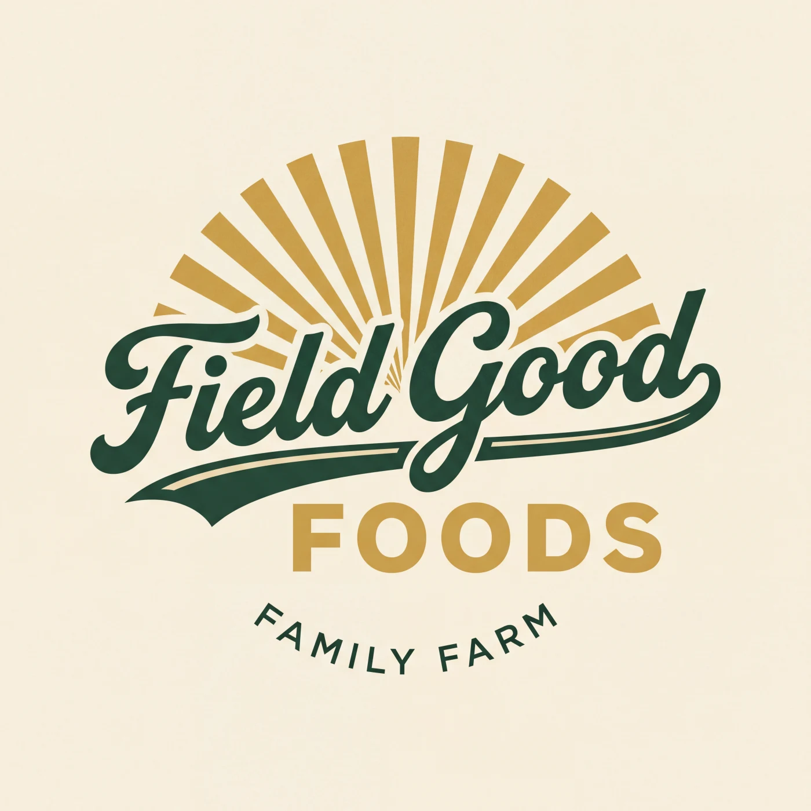

Minimal Field Wordmark
A compact, hand-cut wordmark with a small field sprout. Friendly, direct, and easy to recognize on packaging.
Identity study 01
September 2026
Field Good Foods
Three refined directions and seven existing concepts give us a wider read on what feels right for Field Good Foods. The archive marks are intentionally shown before production cleanup.
Option A / Refined direction
A cleaner evolution of the strongest generated concept. The rising sun and furrows tell the land story immediately, while the editorial wordmark keeps it out of farm-supply territory.
Option B
An oak stripped of the usual seal and badge treatment. Its branches become roots and field lines, connecting five generations of family stewardship to the working land.
Option C
The least illustrative direction. Weight contrast does the branding, while one straw-colored point and a grounded baseline keep the identity tied to the current forest, straw, and paper system.
Options D through J / Existing concepts
These generated concepts are shown as they were made. They broaden the conversation across wordmarks, monograms, illustration, heritage, and merchandise without spending new generation credits.

A compact, hand-cut wordmark with a small field sprout. Friendly, direct, and easy to recognize on packaging.

An FGF monogram built around a leaf. Formal and compact, with a clear path to labels and social avatars.

A farm gate set into layered fields. This is the strongest scene-based option and makes the family farm explicit.

A pastoral illustration with cattle and wild grasses. Better as a large brand signature than a tiny header mark, but rich in warmth.

A detailed fifth-generation crest with cattle, sunrise, and fields. Traditional, story-forward, and built for larger applications.

A compact rounded stamp that feels direct and packaging-ready. Simple enough for labels, boxes, and hats.

A lively script mark with a broad sunrise. This is the most casual and merchandise-friendly option.
Client review
Pick the one that feels most like Field Good Foods, or shortlist up to three. These are direction tests, not finished production files. The selected mark will be rebuilt for web, packaging, social, and one-color use.
Reply with one letter or a three-letter shortlist